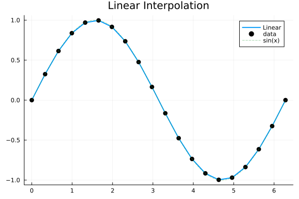
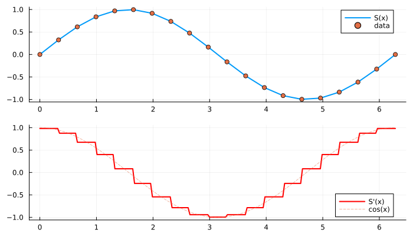

Linear Interpolation
Piecewise linear interpolation connecting data points with straight line segments.
Key Feature: O(1) index lookup with Range grids for maximum performance.
| Grid Type | Lookup | Recommended For |
|---|---|---|
AbstractRange | O(1) | Uniform grids (fastest) |
AbstractVector | O(log n) | Non-uniform grids |
API Reference
One-shot (construction + evaluation)
| Function | Description |
|---|---|
linear_interp(x, y, xq) | Linear interpolation at point(s) xq |
linear_interp!(out, x, y, xq) | In-place linear interpolation |
Re-usable interpolant
| Function | Description |
|---|---|
itp = linear_interp(x, y) | Create linear interpolant |
itp(xq) | Evaluate at point(s) xq |
itp(out, xq) | Evaluate at xq, store result in out |
Derivatives
| Function | Description |
|---|---|
linear_interp(x, y, xq; deriv=1) | First derivative (piecewise constant) |
linear_interp(x, y, xq; deriv=2) | Second derivative (always 0) |
deriv1(itp) | First derivative view |
deriv2(itp) | Second derivative view |
x = range(0.0, 2π, 20) # Range grid → O(1) lookup
y = sin.(x)
xq = range(0.0, 2π, 200)
# One-shot
linear_interp(x, y, 1.0) # single point → 0.8269...
linear_interp(x, y, xq) # multiple points
out = similar(xq)
linear_interp!(out, x, y, xq) # in-place (zero-allocation)
# Interpolant
itp = linear_interp(x, y) # create once
itp(1.0) # evaluate at single point
itp(xq) # evaluate at multiple points
# Derivatives
linear_interp(x, y, 1.0; deriv=1) # piecewise constant slope
d1 = deriv1(itp); d1(1.0) # same via interpolantAlways prefer Range over Vector when possible. Direct O(1) indexing vs O(log n) binary search.
Visual Comparison
using FastInterpolations
using Plots
x = range(0.0, 2π, 20)
y = sin.(x)
xq = range(0.0, 2π, 200)
yq = linear_interp(x, y, xq)
plot(xq, yq, label="Linear", linewidth=2)
scatter!(x, y, label="data", markersize=5, color=:black)
plot!(xq, sin.(xq), label="sin(x)", linestyle=:dash, alpha=0.5)
title!("Linear Interpolation")
Derivative Visualization
y_interp = linear_interp(x, y, xq)
y_deriv = linear_interp(x, y, xq; deriv=1)
p = plot(layout=(2,1), size=(700, 400))
plot!(p[1], xq, y_interp, label="S(x)", linewidth=2)
scatter!(p[1], x, y, label="data", markersize=4)
plot!(p[2], xq, y_deriv, label="S'(x)", linewidth=2, color=:red)
plot!(p[2], xq, cos.(xq), label="cos(x)", linestyle=:dash, alpha=0.5)
p
When to Use
- Speed is critical and smoothness is not required
- Data is already nearly linear between points
- Guaranteed monotonicity preservation
- Memory-constrained (no spline coefficient overhead)